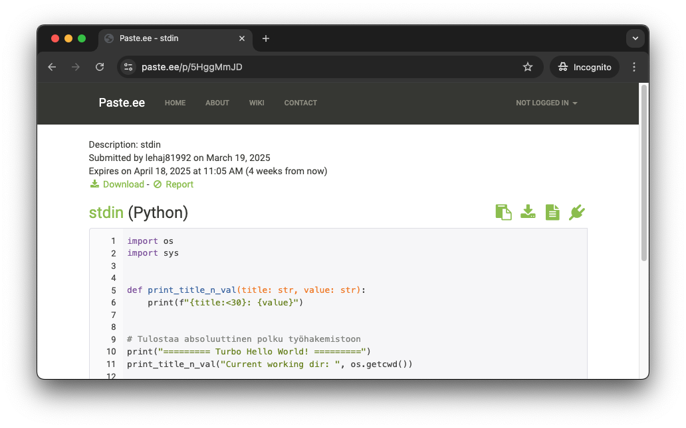

👨🔬 Einsteinium
Tärpit
Subprocess
Pythonin subprocess-kirjasto mahdollistaa muiden ohjelmien käynnistämisen ja niiden tulosteen lukemisen. Tämä on hyödyllistä, kun halutaan esimerkiksi testata ohjelmia automaattisesti tai käyttää ohjelmia osana skriptiä. Yksinkertaisissa skripteissä kannattaa hyödyntää ihan oikeaa shelliä, kuten Bash tai PowerShell. Jos komennon suorittaminen on osa suurempaa kokonaisuutta, tai komennon tuloste vaatii monimutkaista jatkokäsittelyä, Python ja subprocess voivat olla oikeutettu valinta.
import subprocess
result = subprocess.run(
["cat", "/root/kissa.txt"],
text=True,
capture_output=True
)
print(f"STDOUT:")
print(result.stdout)
print(f"STDERR:")
print(result.stderr)
Yllä oleva toteutus tarkoittaa, että nämä kaksi komentoa tekevät käytännössä saman asian:
Skriptin tuloste
Alla tuloste siten, että kissa.txt ei ole olemassa ja sen jälkeen kun se on luotu.
Stdin lukeminen
Linuxista (ja PowerShellistä) sinulle pitäisi olla tuttua, että voit ohjata tulosteen toisen ohjelman syötteeksi. Edistynyt tapa käsitellä tätä on subprocess.Popen-luokka, joka ajaa valitun child ohjelman omassa prosesissa. Tästä saat esimakua Arvaa luku botti -tehtävässä. Pysytään kuitenkin hetki simppelissä esimerkissä, joka auttaa sinua Paste.ee -tehtävässä.
import sys
def print_whatever_is_given_to_stdin():
if sys.stdin.isatty():
print("No input string given", file=sys.stderr)
sys.exit(1)
for line in sys.stdin:
print(line, end="")
print_whatever_is_given_to_stdin()
Yllä esitelty skripti tulostaa kaiken, mitä sille syötetään, paitsi jos syöte on TTY eli terminal device. Jos se ei ole tty, niin oletettavasti:
- Skripti on osa putkea, jossa se saa syötettä toiselta ohjelmalta.
- Esim.
echo "Hello" | python stdin_demo.py
- Esim.
- Skriptin syöte on uudelleenohjattu tiedostosta.
- Esim.
python stdin_demo.py < /root/kissa.txt
- Esim.
Alla skriptin ajo vielä esimerkkinä (rivivaihto lisätty luettavuuden parantamiseksi):
$ alias thingy='python /app/scripts/stdin_demo.py'
$ echo "Hello" | thingy
Hello
$ echo 'Miau mau mou' >> /root/mirri.txt
$ echo 'Purr purrrrr' >> /root/mirri.txt
$ thingy < /root/mirri.txt
Miau mau mou
Purr purrrrr
Tehtävät
Tehtävä: Paste.ee
Tehtäväsi on luoda skripti, jolla voit siirtää stdout:n sisällön paste.ee-sivustolle. Skriptin tulee siis lukea standardisyötettä ja lähettää se paste.ee-sivustolle. Skriptin tulee tulostaa URL-osoite, josta skriptin voi käydä myöhemmin poimimassa. Tämä voi olla hyödyllistä, jos olet esimerkiksi asentanut Linuxille jotakin, mikä vaati useamman komennon. Kenties voit tällöin ajaa vaikkapa seuraavan:
Näin Bash-historyn viimeiset 50 riviä singahtaisi Paste.ee-sivustolle, josta voisit poimia ne myöhemmin dokumentaatiosi dokumentointiin. Tässä harjoituksessa opit käyttämään sekä tokeneita että POST-pyyntöä.
Tarvitset tehtävässä seuraavat:
- paste.ee-käyttäjätunnuksen
- paste.ee API-avaimen
- Luo applikaatio esimerkiksi nimellä
skrohja ilman urlia. - Ota avain talteen. Se on pitkä merkkijono:
aBg************************************S5 - Tallenna se
scripts/.secret - Lisää kyseinen tiedosto
.gitignore-tiedostoon.
- Luo applikaatio esimerkiksi nimellä
- pastee.ee API Documentation
requests-kirjaston
🥷 Yksityisyysvinkki
Jos et halua sivuston saavan sinun oikeaa sähköpostiosoitetta, käytä jotakin väliaikaista sähköpostipalvelua, kuten temp-mail.org tai 10minutemail.com. Jos sivusto hakkeroidaan, oikea sähköpostisi ei ole vaarassa.
Alla on opettajan luoma ohjelmarunko, josta voi olla apua. Vaihtoehtoisesti voit hylätä sen ja lähestyä ongelmaa omalla tavallasi.
Opettajan vihjekoodi
import sys
import requests
import argparse
from dataclasses import dataclass
from pathlib import Path
@dataclass
class NewPasteResponse:
id: str
link: str
@dataclass
class ParsedArguments:
syntax: str
dry_run: bool
def read_secret() -> str:
secret_file = Path("/app/scripts/.secret")
secret = secret_file.read_text().strip()
return secret
def get_valid_syntaxes() -> list[str]:
# You can get all 170+ from: GET https://api.paste.ee/v1/syntaxes
return ["autodetect", "python", "powershell", "bash"]
def get_stdin_lines() -> list[str]:
return [line.rstrip("\n") for line in sys.stdin]
def stdin_to_data_header(syntax="autodetect") -> dict:
return {
"description": "stdin",
"sections": [
{
"name": "stdin",
"syntax": syntax,
"contents": "\n".join(get_stdin_lines()),
}
],
}
def parse_args() -> ParsedArguments:
# IMPLEMENT ME
return ParsedArguments(syntax="python", dry_run=True)
def pretty_print_request(prepared_request: requests.PreparedRequest):
# IMPLEMENT
pass
def post_to_pastee(data: dict, secret: str, dry_run: bool) -> NewPasteResponse | None:
headers = {
"Content-Type": "application/json",
"X-Auth-Token": secret,
}
prepared_request = requests.Request(
method="POST",
url="https://api.paste.ee/v1/pastes",
headers=headers,
json=data).prepare()
if dry_run:
pretty_print_request(prepared_request)
return NewPasteResponse(id="DRY-RUN", link="DRY-RUN")
session = requests.Session()
response = session.send(prepared_request)
session.close()
response_data = response.json()
return NewPasteResponse(id=response_data["id"], link=response_data["link"])
if __name__ == "__main__":
# Get arguments
args = parse_args()
prepared_data = stdin_to_data_header(syntax=args.syntax)
secret = read_secret()
response = post_to_pastee(prepared_data, secret, args.dry_run)
print(f"New paste created: {response.link}")
print(f"ID: {response.id}")
Jos opettajan koodin ajaa dry-run moodissa, tulostuu seuraava:
$ alias pastee='python /app/scripts/to_pastee.py'
$ pastee --syntax python --dry-run < /app/scripts/hello_turbo.py
Dry run. The following request would be made:
=== URL ===
https://api.paste.ee/v1/pastes
=== Headers ===
{'Content-Type': 'application/json', 'X-Auth-Token': '********', 'Content-Length': '707'}
=== Body ===
{"description": "stdin", "sections": [{"name": "stdin", "syntax": "python", "contents": "import os\n\nimport sys\n\n\n\n\n\ndef print_title_n_val(title: str, value: str):\n\n print(f\"{title:<30}: {value}\")\n\n\n\n\n\n# Tulostaa absoluuttinen polku ty\u00f6hakemistoon\n\nprint(\"========= Turbo Hello World! =========\")\n\nprint_title_n_val(\"Current working dir: \", os.getcwd())\n\n\n\n# Tulostaa absoluuttinen polku skriptin sijaintiin\n\nprint_title_n_val(\"Skriptin sijainti: \", os.path.abspath(__file__))\n\n\n\n# Tulostaa kaikki lokaatiot, mist\u00e4 Python etsii moduuleita importtia varten\n\nprint(\"Python moduulien hakupolut:\")\n\nfor path in sys.path:\n\n print(\" \", path)\n"}]}"
Ilman dry-run moodia tulostuu sekä URL että ID:

Kuva 1. Esimerkki paste.ee-sivustolle lähetetystä tiedostosta. Tiedosto näkyy kaikille, jotka tietävät URLin.
Note
Käytännössä sinun ei tietenkään tyypillisesti tarvitse luoda omaa CLI-käyttöliittymää. Ubuntun /bin/-hakemiston Python-skriptejä plärätessä saatoikin huomata skriptin nimeltään pastebinit. Kyseinen skripti lähettää datat paste.ubuntu.com/ tai dpaste.com sivustolle. Jälkimmäinen on vakio, jos sinulla ei ole tunnuksia lisättynä ~/bin/.pastebinit.xml-tiedostoon. Vailla tunnuksia tehdyn postauksen huono puoli on luonnollisesti se, että et voi myöhemmin listata omia pasteja tai poistaa niitä. Se on seuraavat 30 päivää julkisesti online.
Voit kokeilla tunnuksetonta postausta näin:
$ echo 'I am a happy penguin!' | pastebinit
https://dpaste.com/BKZYVE9GZ
$ man pastebinit
... lue lisää ...
Myös muita vaihtoehtoja on olemassa, kuten pastee-cli, joka on Go:lla korjoitettu CLI, joka ajaa jotakuinkin saman asian kuin juuri sinun kirjoittamasi koodi.
Tehtävä: Premiere Markers to YouTube
Luo skripti, joka lataa netistä tekstitiedoston, joka sisältää Adobe Premierestä exportatut Chapter Markerit ja kääntää ne YouTuben Video Chapters-formaattiin. Output-formaatin voi liittää YouTube-videon kuvauskenttään ja videon aikajana katkotaan automaattisesti chapter-markerien kohdalta otsikoiduiksi osioiksi. Lopputuloksen pitäisi näyttää tältä:
00:00 Intro
00:29 Miksi Linux?
01:06 Mikä WSL?
...
32:22 Ubuntun tuhoaminen
...
01:01:06 Ja lisähaasteena yli tunnin klipit
Lisähaaste
Entä jos video on yli tunnin mittainen? Voit lisähaasteena muotoilla formaatin automaattisesti siten, että tunnin ylittävät osiot saavat formaatin 01:00:00.
Alkuperäinen data löytyy gh:sourander/skriptiohjelmointi/exercise-assets/data/premieremarkers.txt. Alla boilerplate-koodi, jolla pääset alkuun. Se lataa kyseisen tiedoston Path-tyypin muuttujaan. Parsi kyseisen muuttujan sisältö ja tulosta konsoliin ja/tai kirjoita uuteen tiedostoon.
import csv
import tempfile
import requests
from pathlib import Path
URI = "https://raw.githubusercontent.com/sourander/skriptiohjelmointi/refs/heads/main/exercise-assets/data/premieremarkers.txt"
def cache_internet_file(uri: str) -> Path:
"""
Katso funktion toteutus aiemman luvun harjoituksesta.
"""
print(f"[INFO] Downloaded data is available at: {temp_file_path}")
return temp_file_path
markers_file = cache_internet_file(URI)
Odotettu bugi!
Jos tässä vaiheessa ajat tiedoston, niin sinulle pitäisi olla alla oleva tilanne ongelmineen. Huomaa, että käytössä on python3 runpy.py --image skroh-python:3.12 --bash-komennon alustama kontti, josta löytyy requests-kirjasto.
$ python scripts/premiere_markers_to_youtube.py
[INFO] Downloaded data is available at: /tmp/premieremarkers.txt
$ cat /tmp/premieremarkers.txt
$ python
>>> from pathlib import Path
>>> content = Path("/tmp/premieremarkers.txt").read_text()
Traceback (most recent call last):
File "<stdin>", line 1, in <module>
File "/usr/local/lib/python3.12/pathlib.py", line 1028, in read_text
return f.read()
^^^^^^^^
File "<frozen codecs>", line 322, in decode
UnicodeDecodeError: 'utf-8' codec can't decode byte 0xff in position 0: invalid start byte
UniCodeError ei siis ole opettajan kämmi tiedostossa vaan odotettu ongelma, joka aiheutuu Premieren käyttämästä enkoodauksesta. Tämän korjaus on olennainen osa tehtävää. Skriptejä kirjoittaessa tulet kohtaamaan urallasi erilaisia enkoodausongelmia, joten tämä on aiheellinen harjoitus.
Vinkki: Encoding
Huomaa, että Premiere kirjoittaa hyvin epätyyllistä enkoodausta. Jos luotat markers_file.open()-funktion. Voit päätellä tiedoston enkoodauksen joko lokaalisti lataamalla tiedoston ja avaamalla sen Visual Studio Codessa tai Pythonin avulla. Alla esimerkki:
def get_file_encoding(file_path: Path) -> str:
with file_path.open("rb") as file:
raw_data = file.read(32)
if raw_data.startswith(codecs.BOM_UTF8):
return "utf-8-sig"
if raw_data.startswith(codecs.BOM_UTF16_LE):
return "utf-16"
if raw_data.startswith(codecs.BOM_UTF32_LE):
return "utf-32"
return "utf-8"
encoding = get_file_encoding(markers_file)
Python-ratkaisu voittaa rautakoodauksen siten, että Premiere saattaa jatkossa vaihtaa tavalliseen UTF-8 enkoodaukseen, jolloin koodi ei enää toimisi, jos rautakoodaat enkoodauksen. Vaihtoehtoisesti käyttäjä on saattanut avata tekstitiedoston jossakin editorissa, joka teki muutoksen automaattisesti. Myös tämä rikkoisi rautakoodatun toteutuksen.
Vinkki: Timeformat
Alkuperäisen datan aikamuoto on hh:mm:ss:frames. Voit käytännössä unohtaa framet.
Tehtävä: Arvaa luku botti
Tämän tehtävän voi tehdä helpotettuna tai haastavana versiona. Helpostetussa versiossa korjaat tämän alla olevan koodin siten, että se pelaa arvaaluku.py-pelin läpi brute forcena eli syöttäen kaikki numerot 1:stä 1000:een, kunnes oikea ratkaisu löytyy. Lisäksi sinun tulee kommentoida koodi tai muutoin varmistaa, että ymmärrät, mitä koodi tekee.
Haastavassa versiossa jatkat koodia siten, että implementoit kesken jääneen binary_search()-funktion loppuun ja lisäät mahdollisuuden vaihtaa ko. solveriin skriptin argumenttien avulla.
Huomaa, että skriptiin on rautakoodattuna oletuksia arvaaluku.py-skriptin toiminnasta. Muokkaa jompaa kumpaa skriptiä, jotta ne toimivat yhteen.
Oletus 1
On oletus, että pyyntö sisältää sanan syötä, ja että tämä tulostetaan erikseen ennen input()-funktiota. Muutoin Pipe on huomattavan vaikea saada toimimaan reaktiivisesti kysymysten kanssa.
Oletus 2
On oletus, että ohjelman tuloste sisältää sanan oikein kun arvaus on oikein. Tämä on tärkeää, jotta solveri voi tietää, milloin lopettaa arvaaminen.
Tip
Kannattaa myös lisätä koodiin rivi, joka tulostaa oikean vastauksen. Tämä helpottaa testaamista ja sen tulkitsemista, että löytääkö arvaaluku_bot.py oikean vastauksen vai ei.
Opettajan vihjekoodi
import subprocess
from pathlib import Path
def brute_force(pipe: subprocess.Popen) -> int:
guess = 1
while guess < 1001:
output = pipe.stdout.readline().strip()
reply = None
if output.startswith("Oikea"):
print(f"[PRE-GAME] {output}")
continue
if "syötä" in output.lower():
pipe.stdin.write("500\n")
pipe.stdin.flush()
reply = pipe.stdout.readline().strip().lower()
if reply:
if "oikein" in reply:
return guess
guess += 1
return -1 # Not found
def binary_search(pipe: subprocess.Popen) -> int:
pass
def guess_number(script: Path, solver):
process = subprocess.Popen(
[ "python", script],
stdin=subprocess.PIPE,
stdout=subprocess.PIPE,
text=True,
encoding="utf-8"
)
# Call the solver function
print(f"[INFO] Solver: {solver.__name__}")
correct = solver(process)
process.terminate()
return correct
if __name__ == "__main__":
SCRIPT = Path("./scripts/arvaaluku.py")
assert SCRIPT.exists(), f"Script not found: {SCRIPT.resolve()}"
# Extra challenge: Handle different solvers with argparse
# solvers = [brute_force, binary_search]
# ...
# solver = solvers[args.solver]
solver = brute_force
correct = guess_number(SCRIPT, solver)
print(f"[MAIN] Correct number: {correct}")
Alla on esiteltynä lopullinen koodin toimivuus ja käyttö brute_force-solverilla. Huomaa, että tuloste on säädetty siten, että se tulostaa vain guess == 1 tai guess % 50 arvaukset, jotta tuloste ei ole liian pitkä. Siksi vain joka viideskymmenes arvaus tulostetaan.
$ python scripts/arvaaluku_bot.py
[INFO] Solver: brute_force
[PRE-GAME] Oikea vastaus: 380
[BOT] Guessing: 1
[>>>] 📈 luku on suurempi kuin 1.
[BOT] Guessing: 50
[>>>] 📈 luku on suurempi kuin 50.
[BOT] Guessing: 100
[>>>] 📈 luku on suurempi kuin 100.
[BOT] Guessing: 150
[>>>] 📈 luku on suurempi kuin 150.
[BOT] Guessing: 200
[>>>] 📈 luku on suurempi kuin 200.
[BOT] Guessing: 250
[>>>] 📈 luku on suurempi kuin 250.
[BOT] Guessing: 300
[>>>] 📈 luku on suurempi kuin 300.
[BOT] Guessing: 350
[>>>] 📈 luku on suurempi kuin 350.
=== Found ===
[>>>] 🎉 oikein! arvasit luvun 380. (peliaika: 0h 0m 0s)
[MAIN] Correct number: 380
Alta voit klikata auki binary search -tulosteesta esimerkin:
Binary Search tuloste
python scripts/arvaaluku_bot.py 1
[INFO] Solver: binary_search
[PRE-GAME] Arvaa luku väliltä 1-1000.
[PRE-GAME] Muu syöte kuin positiviinen kokoluku poistuu ohjelmasta.
[PRE-GAME] Oikea vastaus: 622
[PRE-GAME]
[PRE-GAME] Syötä arvaus:
[BOT] Guessing: 500 (1⸺1000)
[>>>] 📈 luku on suurempi kuin 500.
[BOT] Guessing: 750 (501⸺1000)
[>>>] 📉 luku on pienempi kuin 750.
[BOT] Guessing: 625 (501⸺749)
[>>>] 📉 luku on pienempi kuin 625.
[BOT] Guessing: 562 (501⸺624)
[>>>] 📈 luku on suurempi kuin 562.
[BOT] Guessing: 593 (563⸺624)
[>>>] 📈 luku on suurempi kuin 593.
[BOT] Guessing: 609 (594⸺624)
[>>>] 📈 luku on suurempi kuin 609.
[BOT] Guessing: 617 (610⸺624)
[>>>] 📈 luku on suurempi kuin 617.
[BOT] Guessing: 621 (618⸺624)
[>>>] 📈 luku on suurempi kuin 621.
[BOT] Guessing: 623 (622⸺624)
[>>>] 📉 luku on pienempi kuin 623.
[BOT] Guessing: 622 (622⸺622)
[>>>] 🎉 oikein! arvasit luvun 622. (peliaika: 0h 0m 0s)
[MAIN] Correct number: 622
Huomaa, että vastaus löytyy huonoimmassa tapauksessa log2(1000) eli kymmenellä arvauksella, mikä on huomattavasti nopeampaa kuin brute force -ratkaisu, joka vaatii huonoimmassa tapauksessa 1000 arvausta.